このガイドブックには、セブの街や文化、出発前の準備、現地での食事・移動・暮らし、子どもが過ごす学びの時間、そして困ったときの相談先まで、滞在に関わる情報をまとめています。
章ごとに独立して読めるので、気になるところから開いてご覧ください。
この一冊でわかること
- セブという場所を知る
- 出発前に準備しておきたいこと
- 現地で食べる・移動する・暮らす
- 子どもが体験する時間
- 困ったときに確認できる相談先
セブは、フィリピン中部・ビサヤ地方にある島です。ビジネスや留学で訪れる人も多く、都市らしい賑わいと、海に囲まれたのどかな表情をあわせ持っています。
CITY｜街

ショッピングモールやレストランが並ぶ都市部には、IT Parkのようなビジネス街もあります。歴史を感じる通りと新しい建物が同じ街の中に共存しているのも、セブらしい景色です。
LOCAL｜暮らし
英語が広く通じるため、買い物や食事の場面でも会話がしやすく、ジプニーなどの乗り物も街の日常の風景になっています。
SEA｜海

セブは、透明度の高い海や近隣の島々への玄関口としても知られています。街から少し足をのばすだけで、南国らしい海の景色に出会えます。
CULTURE｜文化

フィリピン、スペイン、アメリカ、それぞれの文化が重なり合ってきた歴史があり、食事や街並み、人々の暮らしの端々にその影響が見られます。信仰も暮らしに根づいており、教会は今も大切な祈りの場になっています。文化や宗教については、次の章でもう少し詳しく紹介します。
フィリピン・セブでは、カトリックの信仰が暮らしの中に自然に溶け込んでいます。街のあちこちに教会があり、日々のミサや祈りの時間が今も大切にされています。
旅行者にとって教会は歴史を感じる観光地のひとつでもありますが、地元の方にとっては今も変わらず大切な祈りの場です。街を歩く途中に立ち寄る際は、そのことを少し意識しておくと、より自然に過ごせます。
教会を訪れるとき
教会や宗教施設を訪れる際は、肩・胸元・脚の露出を控えめにできる服装を意識しておくと安心です。薄手の羽織りものを一枚持っておけば、必要なときにさっと使えて便利です。
セブは一年を通して温暖な気候です。月によって降水量に差があり、比較的雨が少ない時期と、雨が多い時期があります。
月別の降水量の目安
縦棒は月別平均降水量の相対的な高さです（PAGASA Mactan International Airport, Cebu 1991–2020 Climatological Normalsによる）。年によって前後するため、あくまで目安としてご利用ください。
時差
セブ（フィリピン）は、日本より1時間遅れています。出発前に、現地時間への切り替えを忘れないようにしましょう。
日本・フィリピンともにサマータイムがないため、時差は一年を通して変わりません。
ことば
フィリピンの公用語はフィリピノ語（タガログ語がベース）と英語で、セブ島の日常会話ではセブアノ語（ビサヤ語）もよく使われます。観光や日常の買い物では英語が広く通じるため、難しい言い回しを覚えておく必要はありません。
「ありがとう」を意味する「Salamat（サラマット）」は、セブでもよく使われる言葉です。ひとこと添えるだけで、会話が和やかになります。
出発が近づいてきたら、旅の前に整えておきたいことがいくつかあります。ここでは全体の流れをご紹介し、それぞれの詳しい内容は、このあとの章でご案内します。
準備リスト
- パスポートの残存有効期間を確認する
- 航空券・宿泊先の手配を済ませる
- 海外旅行保険に加入する
- eTravel（オンライン入国手続き）を済ませる｜7章
- 服装・持ちものを準備する｜8章
- 変圧器・プラグアダプター等を用意する｜9章
- 現地で使う通信手段を準備する｜10章
- 現金・カード等の支払い手段を準備する｜21章
- 緊急連絡先を控えておく｜24章
ビザ・パスポート
日本国籍者が観光・商用目的でフィリピンへ渡航する場合、最大30日間の無査証（ビザなし）滞在が認められています。有効な往復航空券または第三国行きの航空券が必要です。日本国籍者はパスポート残存期間6か月未満でも入国可能と案内されていますが、渡航前に在日フィリピン大使館の最新情報をご確認ください。
海外旅行保険
海外旅行保険には、出発前に加入しておくのがおすすめです。医療費への備えだけでなく、体調不良やトラブルが起きたときの相談窓口としても役立ちます。加入した保険会社の連絡先は、紙とスマートフォンの両方に控えておきましょう。
フィリピンに入国する際は、eTravelと呼ばれるオンラインの入国手続きが必要です。パスポート情報や搭乗便などを事前に登録しておくことで、入国時の手続きがスムーズになります。
利用の流れ（目安）
公式サイトでアカウントを作成
パスポート情報・搭乗便情報などを入力
登録完了後に発行されるQRコードを保存
搭乗前や入国審査時に、登録証明・QRコードの提示を求められる場合がある
第三者サイトでの代行申請には手数料がかかる場合があるため、公式サイト（etravel.gov.ph）からの登録をおすすめします。
気候や現地の生活に合わせて、動きやすく調整しやすい服装を準備しておくと安心です。

服装
持ちもの
フィリピンでは一般に220Vの電圧が使われています。プラグはA・B・Cタイプが使われる場合があります。持参する充電器や電化製品は、出発前に「INPUT」の表示を確認しておきましょう。
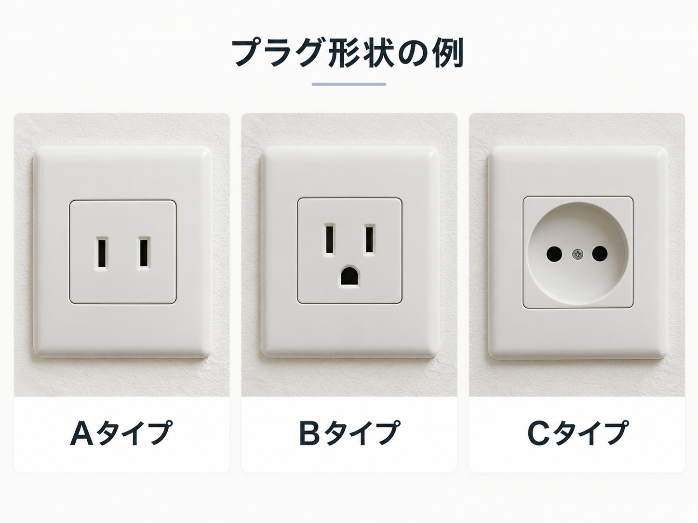
コンセントの形状は複数のタイプが使われているため、必要に応じて使えるよう、変換プラグを1つ用意しておくと便利です。
セブ滞在中は、Grabの手配、地図の確認、家族との連絡、病院や保険会社への連絡など、スマートフォンを使う場面が多くあります。ホテルのWi-Fiだけに頼らず、外出中も通信できる方法を事前に準備しておくと便利です。充電切れや通信トラブルに備えて、モバイルバッテリーや緊急連絡先も準備しておきましょう。

通信方法を選ぶ
eSIM
旅行用eSIMを利用する方法があります。日本にいる間に設定を済ませておくと、現地到着後すぐに通信を始めやすくなります。利用前に、次の点を見ておきましょう。
- 使用するスマートフォンがeSIMに対応しているか
- SIMロック等の利用制限がないか
- 利用開始時期・利用期間
- 利用できるデータ容量
- 音声通話やSMSが含まれるか
料金・プラン・利用条件は変更されるため、出発前に各社の公式情報をご確認ください。
現地SIM・eSIM
フィリピンでは、Globe・Smartなどの現地通信会社のSIM／eSIMを利用できます。利用前に登録が必要になる場合があり、必要書類や条件は各社の公式案内で確認できます。
Globe
旅行者向けSIM／eSIMあり
最新の条件は公式サイトで見ておきましょう（端末の対応状況、利用条件、登録方法、必要書類等）。
Smart
旅行者向けSIM／eSIMあり
最新の条件は公式サイトで見ておきましょう（端末の対応状況、利用条件、登録方法、必要書類等）。
商品内容、料金、登録方法、購入方法等は変更されるため、利用前に各社の公式サイトで最新情報をご確認ください。
日本のスマホをそのまま使う場合
海外ローミングでそのまま使える場合がありますが、利用できるかは契約会社・プランによって異なります。料金・データ容量・利用可能日数・通話やSMSの条件を、出発前に契約中の携帯会社の公式ページでご確認ください。
契約中の携帯会社を確認
格安SIM等では海外データ通信が利用できない場合があります。料金・サービス内容は変更されるため、出発前に契約中の会社の公式情報をご確認ください。
ホテルWi-Fi
ホテルWi-Fiを利用できる場合がありますが、外出中のGrabや地図確認には使えません。外でも通信できる方法を1つ準備しておきましょう。
外出前に準備しておくこと
- 宿泊先・学校・IT Park・病院候補などを地図で確認する
- Grabアプリを使える状態にしておく
- スマートフォンとモバイルバッテリーを充電しておく
- 緊急連絡先はスマートフォンと紙の両方で持つ
詳しい移動ルールは「セブに着いたら｜移動の基本」を参照してください。
セブでは徒歩・車・Grabを場面によって使い分けます。無理に歩かず、親子で無理なく移動できる方法を選びます。

まず覚えておきたいこと
- IT Park内・日中は親子一緒なら徒歩移動
- IT Park内の夜間徒歩は、親子一緒で概ね20時頃までを目安にする
- 道路を横断するときは保護者が車・バイクを確認する（現地歩行者のタイミングは参考程度）
- 子ども単独行動は禁止
Grabを使うとき
- 流しのタクシーは利用せず、Grabを呼ぶ
- 乗車前にアプリ表示の車両・ナンバー等を確認する
- 外出前に通信状態とバッテリー残量を確認する
Grabを呼ぶ
車・ナンバーを確認
乗車
セブでは、飲み水や歯磨きの水など、水まわりで気をつけたいポイントがあります。最初にいくつか知っておけば、現地でも迷わず選べます。
まず覚えておきたいこと
- 水道水は飲まない
- 飲み水は市販のペットボトルの水を選ぶ
- レストランで出された水は飲まず、ペットボトルの水を注文する
- 歯磨きも親子ともペットボトルの水を使う
飲み物を選ぶとき
- 氷や水、果物の洗い方がわかりにくい飲み物は避け、市販のボトル・缶飲料やホットドリンクを選ぶのがおすすめです
セブには、家族で楽しめるフィリピンならではの料理があります。滞在中に出会える味の一部をご紹介します。
タマリンドなどの酸味が効いたスープ料理です。
野菜や肉を薄い皮で包んで揚げた春巻きです。
醤油と酢で煮込んだ、家庭料理としても定番の一品です。
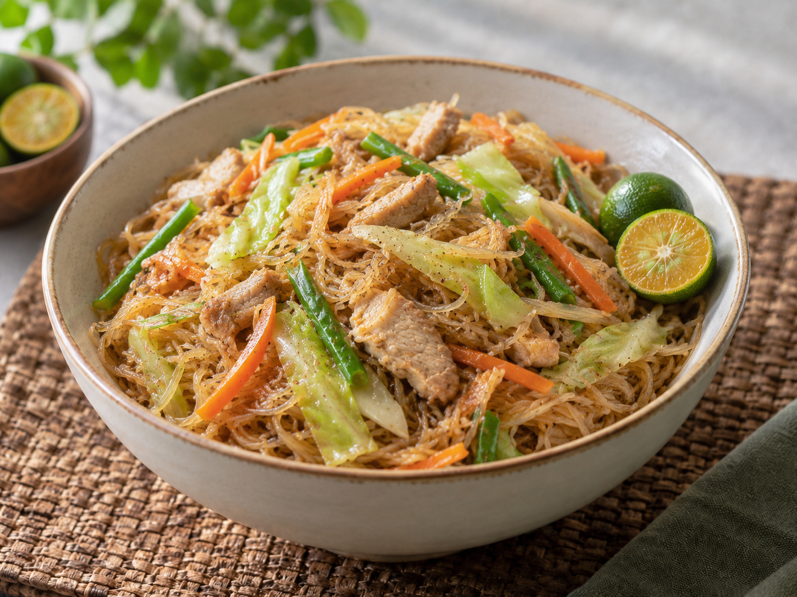
麺を使った炒め物で、行事の席でも食べられます。
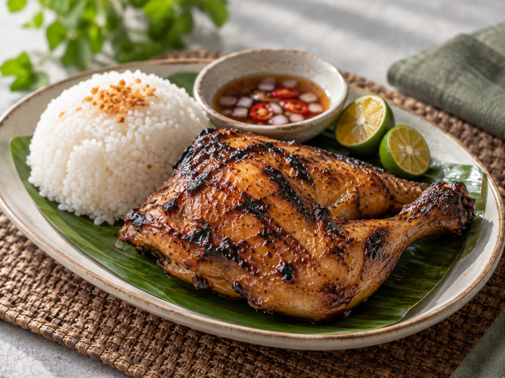
香辛料に漬け込んで炭火で焼いた鶏肉料理です。
皮がパリッとした豚の丸焼きで、セブが名産地として知られています。
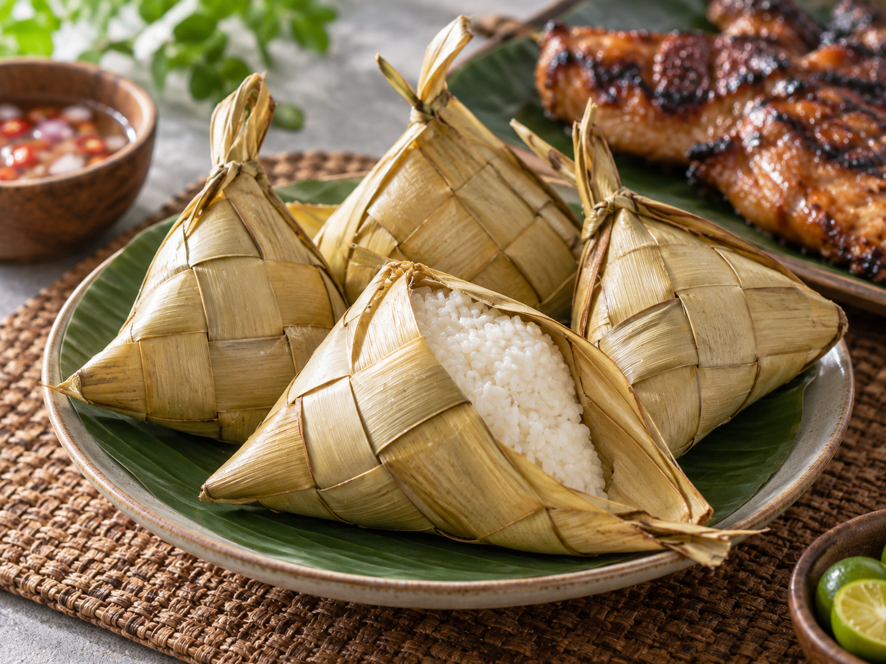
ヤシの葉で編んだ器で炊いたごはんです。
かき氷にフルーツや豆などをのせたデザートです。
食べる際に気をつけたいポイントは、次の章「親子で食事を選ぶとき」で紹介しています。
現地の料理が続いたときや、子どもが食べ慣れた味を選びたいときに利用しやすいチェーン店もあります。
セブで見かけやすいチェーン店

フィリピン発の人気ファストフードチェーンです。

モール内などでよく見かけます。

中華風メニューが中心のチェーン店です。

グリルチキンを中心としたチェーン店です。

ピザやパスタが中心のチェーン店です。

フライドチキンを中心とした、食べ慣れた味を選びやすいチェーン店です。
支店名・営業時間・営業状況は変更される場合があります。訪れる際は現地で最新の状況をご確認ください。
店舗写真：Wikimedia Commons（CC BY / CC BY-SA、各撮影者のクレジットに基づく）
日本食を選びたいとき
現地の料理が合わないときや、食べ慣れた味を選びたいときは、日本食も選択肢のひとつです。
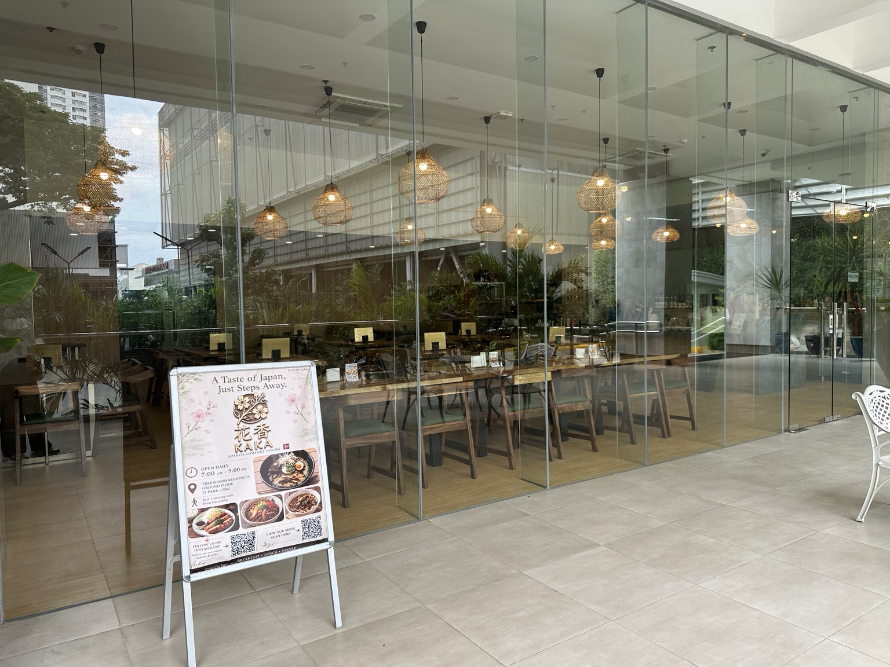
花香 KAKA Japanese Restaurant
日本食を選びたいときの選択肢のひとつです。
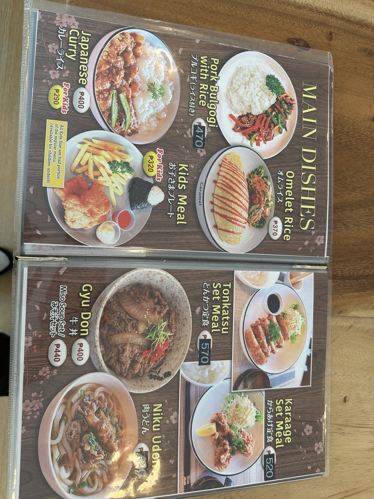
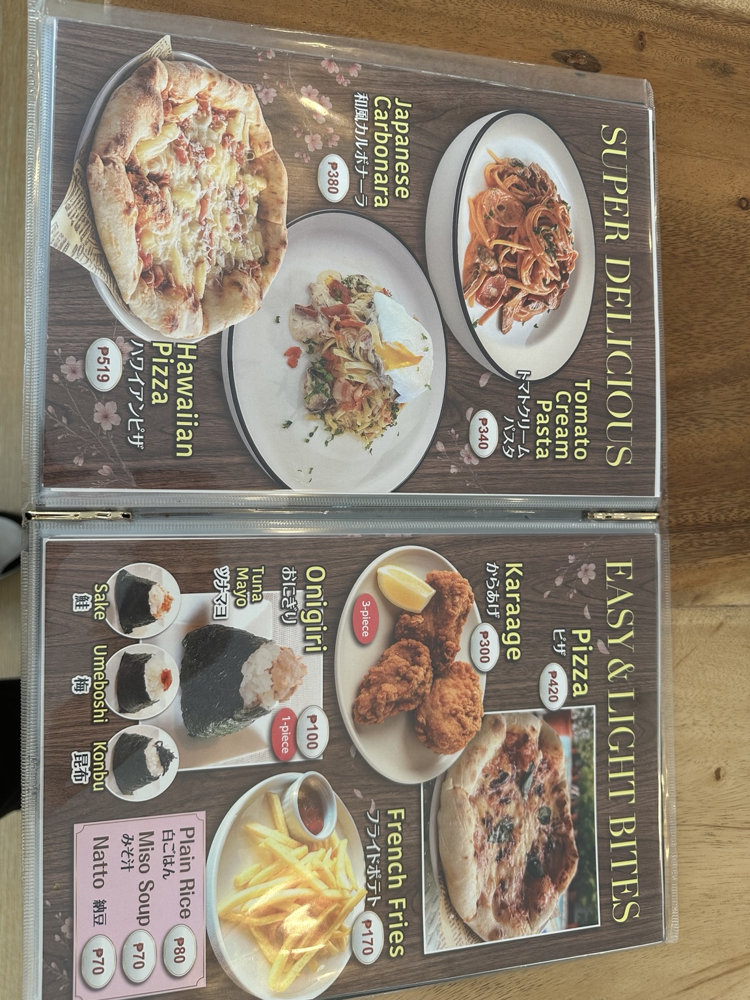
メニュー・価格・提供内容は変更される場合があります。利用時に店舗で最新情報をご確認ください。
食べられるものが限られている場合は、渡航前にメニューを確認しておくと安心です。
迷ったら、生ものは避けて、作りたてで火の通った料理を選びます。
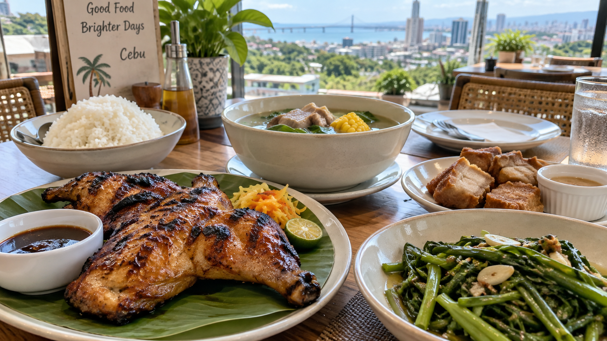
まず覚えておきたいこと
- レストランでは、作りたてで火の通った料理を選ぶ
- 生野菜・サラダは避ける
- 市場・スーパーのカットフルーツは避ける
- 屋台は避け、レストランなど別の場所で食べる
- フードコートでは、作りたてで十分に火の通った料理を選ぶ（長時間置かれているもの・生もの・ぬるい料理は避ける）
- 子どものおやつ・飲み物は、市販の個包装のお菓子やボトル・缶飲料を選ぶ
- 学校で口にするものは原則保護者持参のみ
セブでの海外体験は、教室で英語を学ぶことだけが目的ではありません。買い物をしたり、街を歩いたり、現地の人と話したり。日本とは違う環境の中で過ごすことそのものが、子どもにとって新しい体験になります。
体験例
これらは必須の実施項目ではありません。受け入れ先や当日の状況、子どもの興味・体調によって内容は異なります。
現地校見学について
希望がある場合は、受け入れ先や学校の予定に応じて調整できる場合があります。
保護者の時間
子どもが体験している時間は、保護者は仕事をしたり、カフェで過ごしたり、買い物をしたり、それぞれの時間を自由に過ごせます。
食事に関する注意点は「親子で食事を選ぶとき」もあわせてご確認ください。
外出時は、貴重品の持ち方や緊急連絡先の保管方法を決めておくとスムーズです。
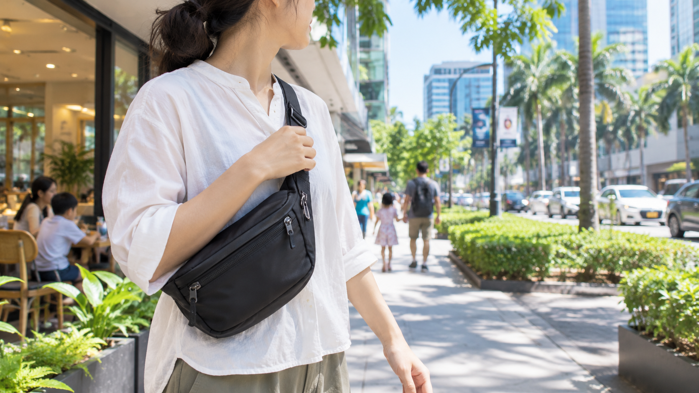
まず覚えておきたいこと
- 物乞いに声をかけられた場合は、財布を出さず、立ち止まらずその場を離れます。
- バッグは子どもと手をつなげるよう片手を空けられるものを選ぶ（斜めがけ等）
- 緊急連絡先はスマートフォンだけでなく紙でも持つ
- モバイルバッテリーは外出時に持参する
外出前に用意したいもの
強い日差しと突然のスコールに備えておくと、現地でも対応しやすくなります。
まず覚えておきたいこと
- 日中の外出は日焼け止め・帽子・日傘・水分を準備する
- 冷房が効いた場所には薄手の長袖を持参する
- スコールのときは無理に歩かない
セブでは、犬や猫、虫を見かけることがあります。触らない・近づかないなど、いくつかのルールを決めておきましょう。
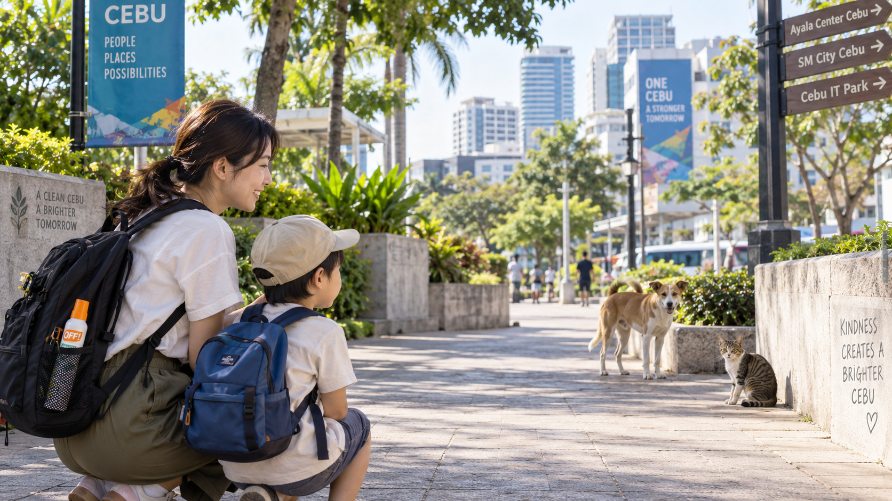
まず覚えておきたいこと
- 虫が気になるときは虫除けを使用する
- 犬・猫には触らない・近づかない
- 噛まれた・引っかかれたときは石けんと流水で十分に洗い、速やかに医療機関を受診する（狂犬病曝露後予防については医師の判断を受ける）
現地で迷ったら
※狂犬病曝露後予防については医師の判断を受ける
セブのトイレは、日本とは使い方が違います。特にトイレットペーパーの扱いは、最初に知っておくと戸惑いません。
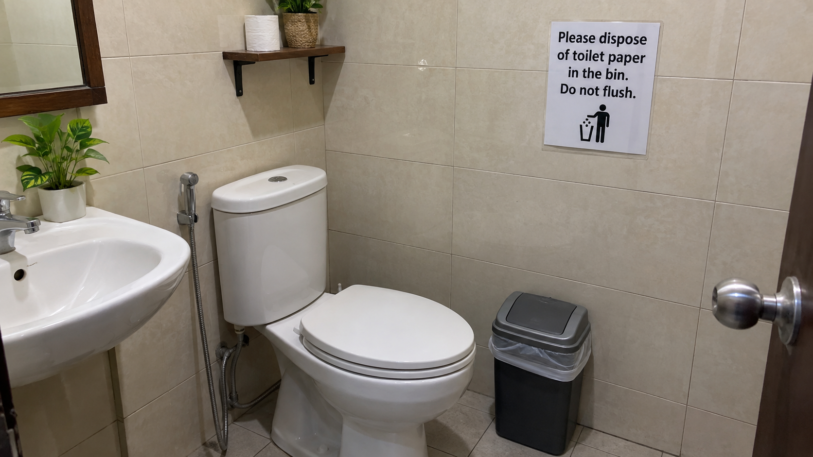
まず覚えておきたいこと
- トイレットペーパーは基本的にゴミ箱へ。施設に案内がある場合は、その案内に従います。
- 「流せる」と書かれていても、施設の案内がなければ流さない
現地で迷ったら
※施設に案内がある場合は、その案内に従う
セブ滞在中は、ひとつの支払い手段だけに頼らず、現金・通常のクレジットカード／デビットカード・Wise・Revolutなど、複数の支払い方法を組み合わせて準備しておくと対応しやすくなります。店舗によって利用できる支払い方法が異なるため、現金が必要な場面にも備えてください。
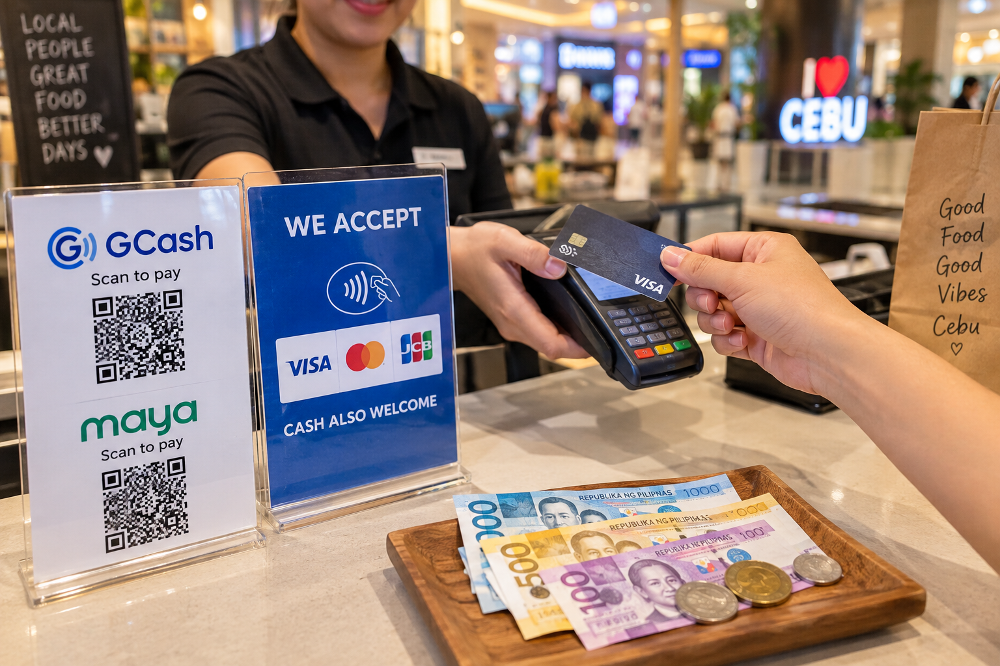
通貨
フィリピンの通貨はフィリピンペソ（PHP）です。
カード等の決済手段とあわせて、必要に応じてペソも準備しておきましょう。
両替場所・為替レート・手数料等は変わるため、利用時に最新情報をご確認ください。
現金
カードが使えない場面に備えて、少額の現金も持っておくと便利です。
クレジットカード／デビットカード
クレジットカードが使える店舗と、使えない店舗があります。カードが使えないお店もあるため、現金も少し用意しておきます。
Wise
Wiseのデビットカードは、海外でのカード決済や、対応するATMでの現金引き出しに利用できます。フィリピンでも対応ATMでの出金が可能です。
利用時は、以下を確認してください。
- カードが有効化されているか
- PINを確認しているか
- アプリに必要な残高があるか
- ATM画面に表示される手数料
- Wiseの最新の利用条件・手数料
ATMによっては、ATM運営会社側の手数料が発生する場合があります。料金や無料出金回数等は変更されるため、公式サイトでご確認ください。
Revolut
Revolutカードも、対応する店舗でのカード決済やATMでの現金引き出しに利用できます。Revolut Japanの公式情報では、PHP（フィリピンペソ）はカード決済・ATM引き出しの対応通貨に含まれています。
利用時は、次の点を確認しておきましょう。
- カードが利用可能な状態か
- PINを確認しているか
- アプリ残高
- ATM側の手数料表示
- Revolutの最新の利用条件・手数料
料金・無料出金条件等はプランや時期により変わるため、公式サイトでご確認ください。
利用条件・手数料は変更されるため、公式サイトで最新情報をご確認ください。
現地で迷ったら
チップ
フィリピンでは、チップは必須ではありません。
- レストランでは、会計にサービス料（service charge）が含まれている場合があります。その場合は、追加でチップを渡さなくても問題ありません
- サービスチャージが含まれていない場合や、特にお礼を伝えたい場面では、少額を渡すことがあります
- ホテルスタッフやドライバー等へのチップも、必須ではなく、サービスへの感謝として渡すものです
- 無理に金額を決めて準備する必要はありません
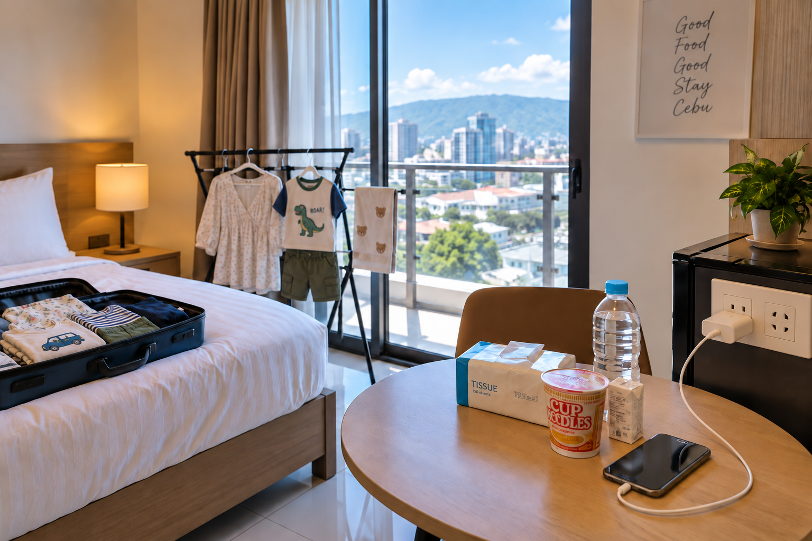
洗濯
洗濯が必要な場合は、ホテルのランドリーサービスや近隣のランドリーを見ておくと便利です。利用できるサービスや料金は、宿泊先でご確認ください。
コンビニ・ミニマート
飲み物や日用品などが必要な場合は、宿泊先の近くにあるコンビニやミニマートを見ておくと便利です。
コンセント・電圧については「9. コンセント・電圧」もあわせてご確認ください。
子どもが体調不良のとき
まず予定を中止し、休ませます。
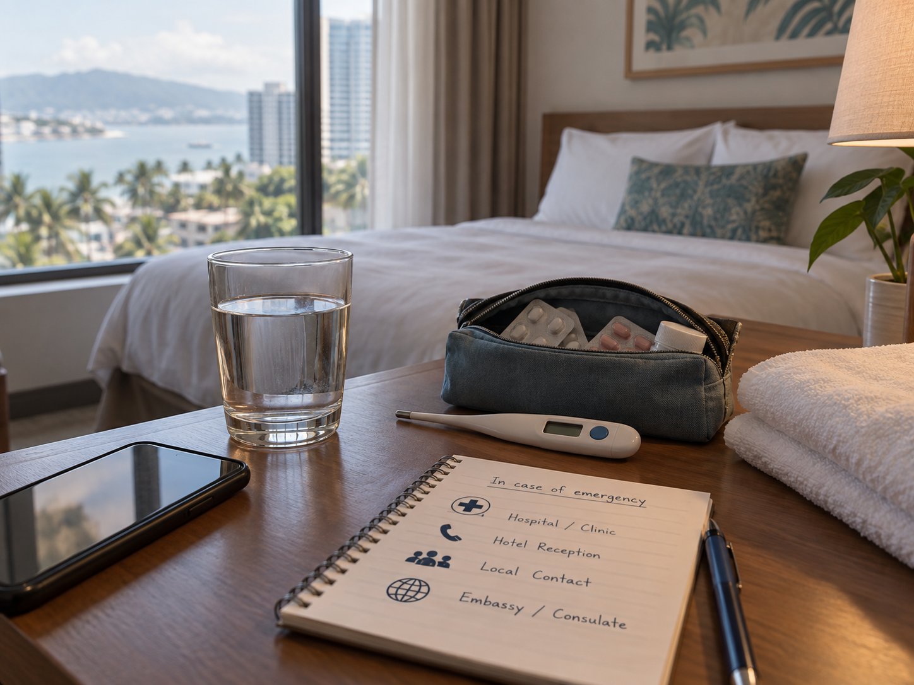
その後の流れ
海外旅行保険の連絡先を確認
Japanese Help Desk等へ相談
必要に応じて医療機関を受診
病院候補
受診が必要になったときに確認する病院の候補です。
Cebu Doctors
Chong Hua
現地で迷ったら
このガイドは、現地で迷ったときに必要な生活情報や選択肢を整理するためのものです。当社のサポート範囲は以下のとおりです。
できること
- 事前ヒアリング
- 現地生活情報
- 学校／体験関連の情報・調整
- 食事・移動・医療に関する情報提供
- 病院候補の案内
- 保険確認時のチェックポイント
- 現地ネットワークを使った情報確認
- 滞在中の相談
できないこと
以下の対応は当社のサポート対象外です。
- 航空券・宿泊・現地交通の手配
- ツアー添乗
- 24時間現地対応
- 子どもの預かり・監護
- 保護者代行
- 病院同行
- 医療判断
- 事故・盗難時の現地出動
- 保護者に代わる緊急判断
医療に関する判断は、保護者が行ってください。
体調不良や事故など、判断に迷う場面では、まず海外旅行保険の連絡先またはJapanese Help Desk等へご相談ください。